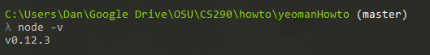

Getting Started
What exactly is Yeoman?
Before we can install yeoman, we need some other parts. First, we need to install Node.js. Node.js is a cross-platform runtime environment. It allows websites to function under event driven programming principles. However, you don't need to worry if this is all too much; we'll only be using a small piece of the Node.js puzzle today: npm. After selecting the appropriate executable and installing it, it may be necessary to restart your computer. To confirm installation of node.js, in cmd, type “node –v”
With node.js installed, it will now be possible to download the 3 parts necessary for yeoman: Yo, Bower, and Grunt.
- Yo
- Yo is a website generator service. When launched, a user can simply toggle options on/off, such as bootstrap of SASS. Yo will then automate the process of constructing the framework of your future website. To search the full listing of Yeoman generators, click here.
- Bower
- Bower is used in conjuction with yo. Bower is a tool which allows you to retrieve and install multiple components, such as html, css, or js files. It also allows searching for specific versions.
- Grunt
- Yo builds and Bower finds and includes support files. Grunt though is different.
Grunt is used to support the whole process for the user, whereas the other two are more
meant for supporting the web app. For today, we’ll be using 2 commands with grunt: serve,
and ‘grunt’, and then another one worth mentioning: test.
- grunt serve.
- grunt build.
- grunt test
This creates a local host for your website so you can witness all the pieces in action. For added benefit, download a plugin for your browser that allows active live reloading of a webpage.
Typing this into the cmd will compress your files into the fewest lines possible, run some tests, and compile the various pieces of your site into a single bundle.
While we will not be using test today, it is invaluable in larger projects. This runs an automated testing suite for your web app. It’s an all-round fantastic debugging tool.
Let's now begin downloading the files.
Part 2: Installing the Pieces